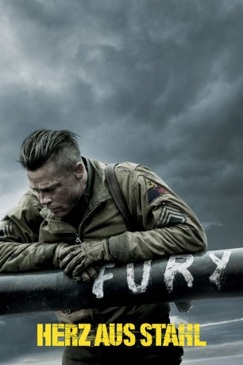

gesehen am 09.03.2015
gesehen am 09.03.2015Alternativ: Fury gesehen am 09.03.2015
 
 IMDB-Wertung: 7.6 / 10
IMDB-Wertung: 7.6 / 10  Metascore:
Metascore: 
April 1945: Die Alliierten starten im Zweiten Weltkrieg ihre finale Offensive gegen Nazi-Deutschland. Ganz vorne dabei ist ein Sherman-Panzer, der von seiner Crew liebevoll "Fury" getauft wurde. Angeführt wird die fünfköpfige Truppe vom kampferprobten Sergeant Wardaddy, der den Krieg bestens kennt und schon viele Schlachten geschlagen hat. Immer weiter stoßen er und seine Männer ins feindliche Gebiet vor und finden sich bald in einer gefährlichen Lage wieder. Denn plötzlich sind sie in der Unterzahl, mit dem jungen Norman Ellison ist zudem erst kürzlich ein Rookie zum Team gestoßen. Doch gegen jede Wahrscheinlichkeit wollen die tapferen Männer ein weiteres Mal bestehen und Nazi-Deutschland mitten ins Herz treffen.
Jahr: 2014
Dauer: 134 Minuten
FSK: 16
Land: USA Studio: Sony Pictures ReleasingTonspuren: DTS - ,
Untertitel: Deutsch, Englisch,
Auflösung: 1080p (1920×808) Größe: 11468 MB
Regisseur: David Ayer
Drehbuch: David Ayer
Soundtrack: Steven Price
Darsteller:
 Brad Pitt als Don 'Wardaddy' Collier
Brad Pitt als Don 'Wardaddy' Collier Shia LaBeouf als Boyd 'Bible' Swan
Shia LaBeouf als Boyd 'Bible' Swan Logan Lerman als Norman Ellison
Logan Lerman als Norman Ellison Michael Peña als Trini 'Gordo' Garcia
Michael Peña als Trini 'Gordo' Garcia Jon Bernthal als Grady 'Coon-Ass' Travis
Jon Bernthal als Grady 'Coon-Ass' Travis Jim Parrack als Sergeant Binkowski
Jim Parrack als Sergeant Binkowski Brad William Henke als Sergeant Davis
Brad William Henke als Sergeant Davis Kevin Vance als Sergeant Peterson
Kevin Vance als Sergeant Peterson Xavier Samuel als Lieutenant Parker
Xavier Samuel als Lieutenant Parker Jason Isaacs als Captain Waggoner
Jason Isaacs als Captain Waggoner Anamaria Marinca als Irma
Anamaria Marinca als Irma Alicia von Rittberg als Emma
Alicia von Rittberg als Emma Scott Eastwood als Sergeant Miles
Scott Eastwood als Sergeant Miles Laurence Spellman als Sergeant Dillard
Laurence Spellman als Sergeant Dillard Adam Ganne als SS Lieutenant
Adam Ganne als SS Lieutenant Eric Kofi-Abrefa als Company Messenger
Eric Kofi-Abrefa als Company Messenger Osi Okerafor als Benton
Osi Okerafor als Benton John Macmillan als Corporal
John Macmillan als Corporal Marek Oravec als SS Officer
Marek Oravec als SS Officer Kyle Soller als Medic #1
Kyle Soller als Medic #1 Jake Curran als Medic #2
Jake Curran als Medic #2 Branko Tomovic als German Corporal
Branko Tomovic als German Corporal Orion Lee als Tired GI #1
Orion Lee als Tired GI #1 Christian Contreras als Outpost Sentry
Christian Contreras als Outpost Sentry Lee Asquith-Coe als SS Infantry , uncredited
Lee Asquith-Coe als SS Infantry , uncredited Max Cavenham als Marine, Fury Platoon , uncredited
Max Cavenham als Marine, Fury Platoon , uncredited Josh Dyer als Baker Company , uncredited
Josh Dyer als Baker Company , uncredited Julie Eagleton als Jewish Escapee , uncredited
Julie Eagleton als Jewish Escapee , uncredited Kevin Fyfe als US Sgt Baker Company , uncredited
Kevin Fyfe als US Sgt Baker Company , uncredited Neve Gachev als German Refugee , uncredited
Neve Gachev als German Refugee , uncreditedDatei: X:\2014(G-M)\Herz aus Stahl (2014, FSK16, 1920x808).mkv seit 02.02.2015
Festplatte: HD 2013(I-Z)-2014(A-Z)
 Es gibt insgesamt 136 Filme in der Gruppe '2014(G-M)'
Es gibt insgesamt 136 Filme in der Gruppe '2014(G-M)'